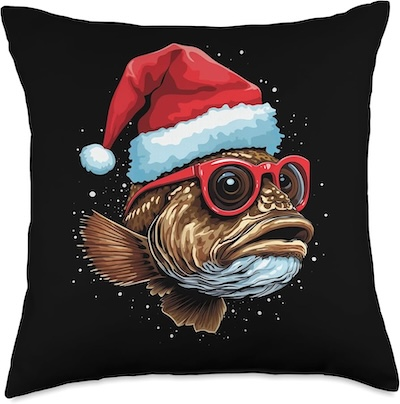

User Story / Use Case / Interaction Flow 4
User has an account and has used the app before, is now creating a group for an activity/interest.
Name: Gale Grouper
Profession & Bio: Gale is independently wealthy as the heir to a caviar factory and does not work. They spend their days on their many hobbies, and tend to get lonely. Gale wants to put together a group of people to drink wine and paint with.
Technology:
Devices:
- Macbook Air using Safari
- iPad Pro using Safari
- iPhone 15 using Safari
- Unlimited access to wifi and data
Love/Hate:
- Gale is not great with technology and mostly uses it to check emails and stay connected with old friends on social media.
- Gale does not hate technology, but is easily frustrated when things aren't intuitive to them.
Proficiency:
- Gale is not very proficient with technology but not awful. They would not consider themselves "techie" at all.
- If an app or website doesn't work, they will generally give up and not ask for help at all.
Attitudes and Behaviors:
- Gale is not busy, very laid back, and is willing to put hours into projects (but does not want to figure out tech problems)
- Gale expects technology to work easily as a means to an end. They will use a new website or app with a specific function in mind, but will not go exploring.
Frustrations and Needs:
- Gale is frustrated that it feels like everyone else is working all the time.
- Gale is willing to spend time and be patient to find new friends with which to drink wine, paint, and laugh.
- Gale needs a platform where they find people interested in the same things as her, and available at the same times.
Goals:
- Gale's goal is to put together a group of artists and wine-os who can meet on weekday mornings.
- Gale wants to use the website as a communication platform for this group, at least at first.
User Story:
- As a user of the app, I will create a group with my exact activity in mind to find people who are interested.
- As a user of the app, I will vet those who want to join to make sure we will mesh well.
- As a creator of a group in the app, I will use the built-in functions to describe my group and add/remove members.
Use Case
Gale was watching daytime television and browsing social media with their pet snail when an ad appeared for the website saying they could create the group. Gale had always wanted to be invited to a wine & painting party. They decided to visit the website and create their own group instead of waiting to be invited to one.
- Pre Condition: Gale already has an account set up, interests added, and is familiar with the functionality.
- Post Condition: Gale will have created a group and found a few members to invite.
Interaction Flow:
- Gale opens up the website on their phone
- The website prompts Gale to log in with their username/password
- Gale enters their username and password and clicks "login"
- The website takes Gale to their Home Page, where they can see their profile, existing connections, start a new matching session, or create a new group.
- Gale taps on "create a new group"
- The website prompts Gale with a list of checkboxes that match the interests in their profile
- Gale taps the box for "painting" and the box for "wine" and clicks "create a group"
- The website presents Gale with a page to add information about the group.
- Gale enters information such as an introduction, a description of the event, and what time they would like to do it. Gale then taps "create group"
- The website presents Gale with the new group page, with an information section, no other members, and a "invite new members" button.
- Gale clicks "invite new members"
- The website enters the matching function, and shows Gale an individual's profile"
- Gale likes this profile and clicks "Invite this person to connect"
- The website says "request to connect sent! Keep searching?"
- Gale clicks on "keep searching"
- The website shows Gale another individual's profile
- Gale likes this profile and clicks "connect with this person"
- The website again says "request to connect sent! Keep searching?"
- Gale decides to relax after all that work, and puts away their phone. Gale will wait for notifications.